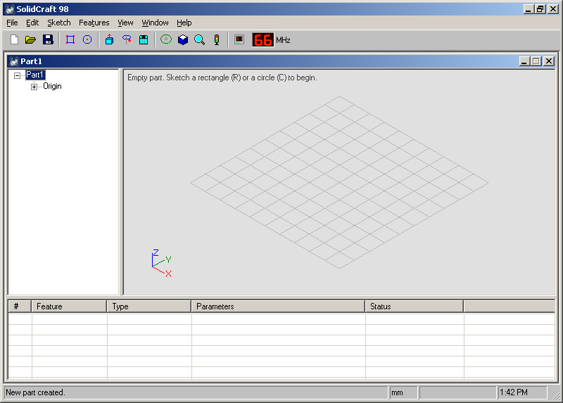
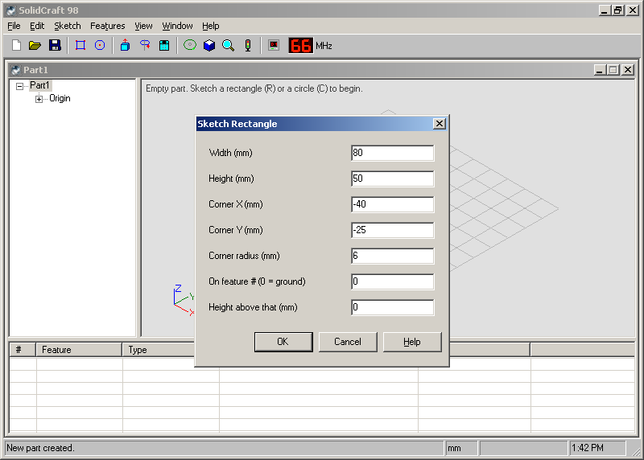
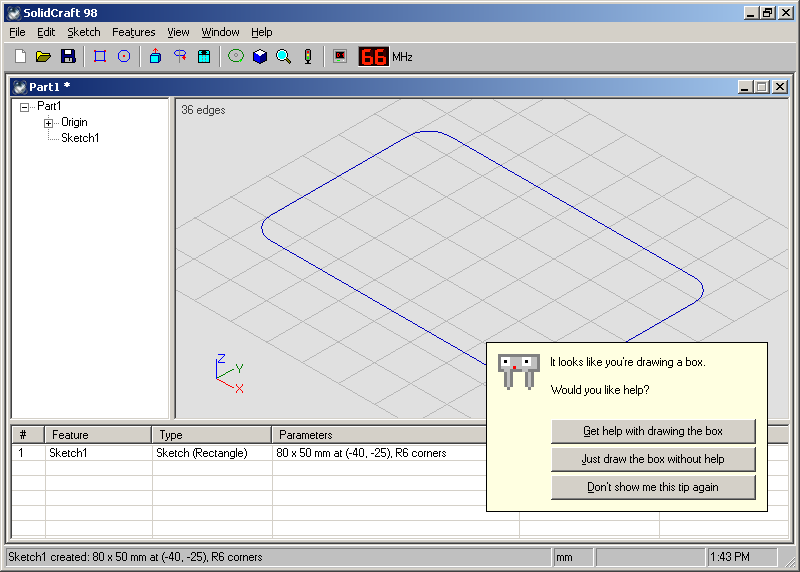
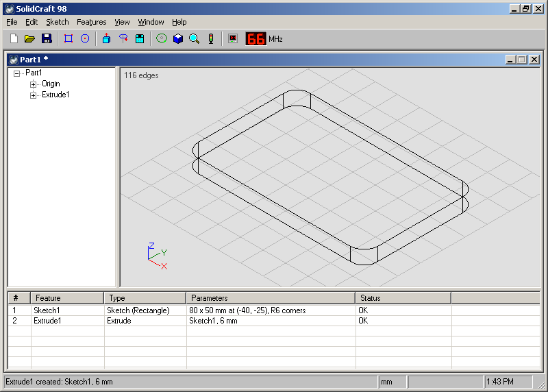
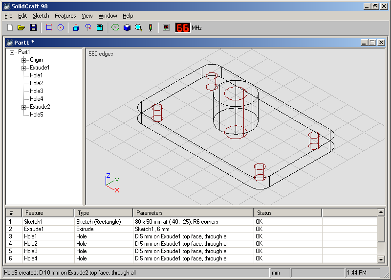
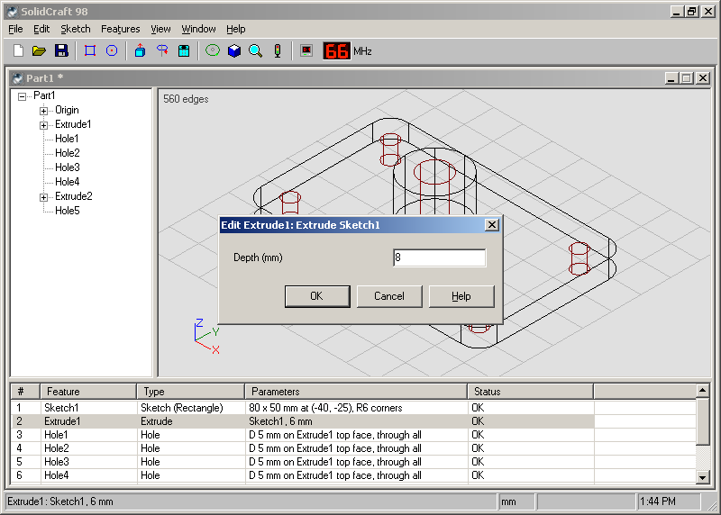
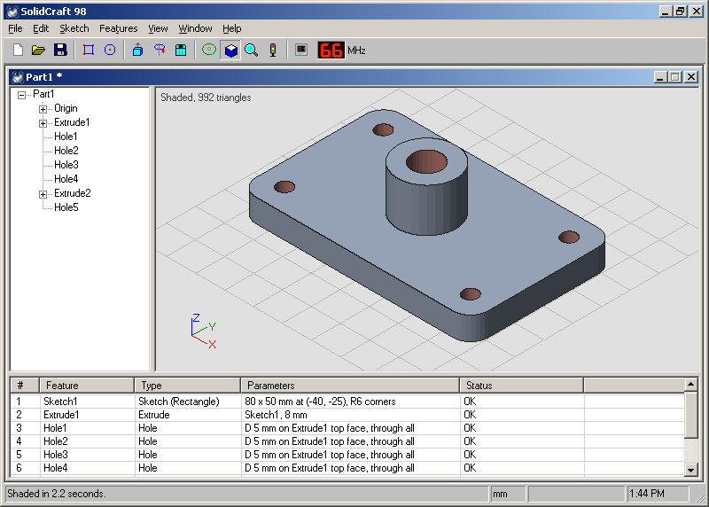
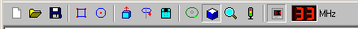
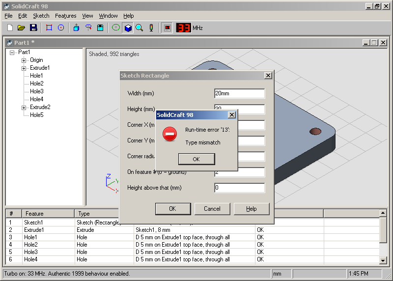
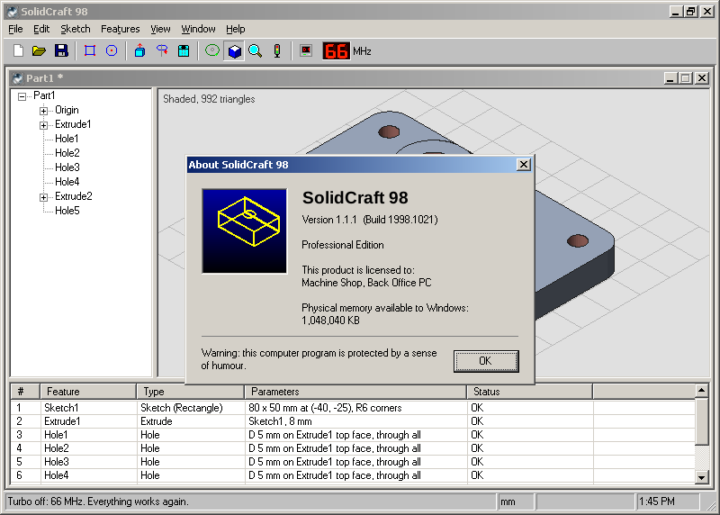

SolidCraft 98 is a parametric CAD program for the desktop PC. You draw a flat shape, pull it into a solid, and drill holes in it. Then you change any number you like, and the part follows.
This book is short on purpose. It shows you the screen, walks you through one real part from start to finish, and then lets you get on with it. Every picture is a real screenshot, taken on ReactOS at 800 × 600, which is the resolution SolidCraft 98 was meant for.
You need: a PC, SolidCraft 98 1.1.1, and about ten minutes.
Download SolidCraft98-1.1.1.zip from the
Releases page, unzip it anywhere,
and run SolidCraft98.exe. There's no installer and no setup program. (There is a
setup program, but it's not for installing. See Chapter 7.)
It runs on Windows 10 and 11 and on ReactOS. If you'd rather have it on a floppy, each release also has a 1.44 MB disk image.

We'll make a mounting plate: 80 × 50 × 6 mm with round corners, a hole in each corner,
and a boss in the middle with a hole through it. You'll find the finished one in
Samples\Mounting Plate.sc98 if you'd like to peek.
Press R for Sketch Rectangle. Every command asks for its numbers in the same kind of box. Type a number, press Tab for the next one, and Enter when you're done.

80/2 is 40, and
25+3.5 is 28.5. They don't do units, and they'll tell you so.
Cal pops up the first time you sketch a rectangle. Cal means well. Pick whichever button you like; your rectangle is drawn either way.
Press E for Extrude, type 6, and press Enter. The outline becomes a solid
plate, and Extrude1 appears in the tree and the timeline.

Press H for Hole. Diameter 5, Depth 0 (0 means all the way through), Centre X −32, Centre Y −17. Do it three more times at (32, −17), (32, 17) and (−32, 17).
Press C for Sketch Circle: Radius 10, Centre 0, 0. Set On feature # to 2, the plate's number in the timeline's # column, so the circle sits on top of the plate. Then E again, 15 mm. Last, one more H: Diameter 10, Depth 0, Centre 0, 0. It goes into the boss, and because it goes all the way through, it carries on through the plate too.

Save it with Ctrl+S. Parts save as .sc98 files, which only
SolidCraft 98 can read. This is traditional.
Here's the clever bit. Every feature remembers its numbers, and everything built on it follows when they change.
Double-click Extrude1 in the timeline (or select it and press Enter). Make the plate 8 mm instead of 6, and press Enter.

Changed your mind about the change? Ctrl+Z takes off the last feature you added, and Del deletes the selected one. If anything was built on it, SolidCraft 98 asks first.
Press S. SolidCraft 98 works out every pixel of every face itself, then shows the picture a few rows at a time, top to bottom, the way a good render should. Press S again for wireframe.

To 3D-print it, choose File › Export for Rapid Prototyping (*.stl). You get an STL file in millimetres that any slicer opens. Holes go all the way through, and the boss is joined to the plate, so it prints as one solid.

Like the button on the front of a 1990s PC. Press it and the LED changes from 66 to 33. That's not a typo.
Turbo switches on the full 1999 experience. Some things get slower, some things get more talkative, and a few things you wouldn't expect. With Turbo off, everything just works.

20mm into a number box. Keep trying. It
gets more personal.No spoilers. Just hints.
/Y2KTEST, turn on Turbo, and wait a minute.
| Ctrl+N / O / S | New, Open, Save |
| Ctrl+Z | Undo the last feature |
| R, C | Sketch a rectangle, a circle |
| E, V, H | Extrude, Revolve, Hole |
| I, F | Isometric view, Zoom to fit |
| S | Shaded (again for wireframe) |
| Enter, or double-click | Edit the selected feature |
| Del | Delete the selected feature |
| + / - | Zoom in, zoom out |
| F5 | Regenerate |
| F1 | Help (it isn't installed) |
"It's a joke, but it works."
SolidCraft 98 is a parametric CAD program written the way it would have been in 1999. This is the book that came in the box. Well, it would have.
SolidCraft 98 is a parody. It isn't affiliated with, endorsed by, or a replacement for SolidCraft. Back Office Press is as real as the Turbo button. Text and pictures MIT licensed, like the program.